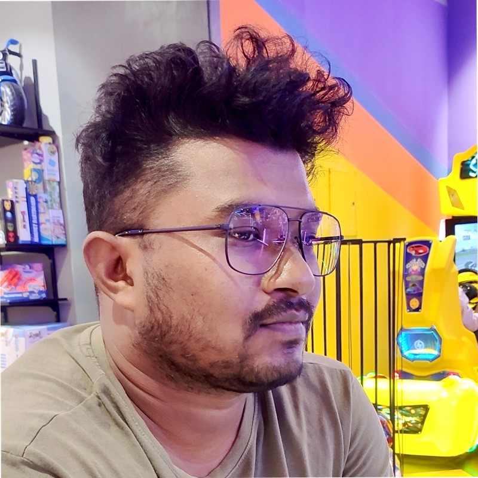

About Me

🎓 Ph.D. | M.Tech | CSE | IIT Guwahati 🎓
I've dedicated my career to advancing research in Artificial Intelligence (AI), Natural Language Processing (NLP), Audio, and Computer Vision. With more than 20 publications, I believe I have contributed in a meaningful way to the advancement of these fields.
As a seasoned Researcher and Senior Manager, I specialize in AI, Machine Learning, Deep Learning, NLP, and Computer Vision. My work spans industries including sports, telecommunications, healthcare, and legal sectors, leveraging Large Language Models (LLMs) and Audio/Vision Foundation Models to analyze complex data.
Currently, I am dedicated to building Indic LLM and LLM-related applications, alongside working on Audio LM and Vision LM projects.
Recognized with the "Best Research Award" at OSUSAAC 2020, I continue to push the boundaries of innovation. My doctoral research focused on analyzing cricket players' strengths and weaknesses through live ball-by-ball Text Commentary, with expertise in Python, R, Matlab, TensorFlow, and PyTorch. I've disseminated my findings in renowned conferences such as: ICMLA, ESANN, ECML-PKDD, CMSAC, IJCNN, and INTERSPEECH.
News & Update
- June 2023: Awesome Audio Question Answering [Link]
- Nov 2023: Awesome Audio Visual Question Answering [Link]
Areas of Expertise
- NLP: Large Language Models (LLMs), Retrieval-Augmented Generation (RAG), Seq-to-Seq Tasks, Cross-Lingual Tasks, NLU, NLG, Conversational AI, and Chatbots.
- Audio: Audio Language Models (ALMs), ASR, Audio Classification, Audio Captioning, Audio Retrieval, Audio Question Answering (QA), and Environmental Sound Analysis.
- Computer Vision: Vision Language Models (VLMs), Image Classification, Image Captioning, Image Retrieval, Visual QA, and Audio-Visual QA.
Experience
Senior Research Scientist, Reliance Jio AICoE, Hyderabad, India (Sep 2021 - Present)
- Call Audit Automation
- Patient Notes Conversion
- Indic LLM
- Agriculture RAG and LLM
- Art VLM
- Agriculture Time Series Analysis
- PDF Voicebot
- Hospital Voicebot
- Aspect-based Sentiment Analysis
- Contract Review AI
Research Intern, Reliance Jio AICoE, Hyderabad, India (June 2021 - Aug 2021)
- Cricket Analytics for Mumbai Indians
Teaching Assistant, IIT Guwahati, India (July 2013 - Dec 2020)
- Courses: Software Engineering (Fall-2018, Fall-2019), Design and Analysis of Algorithms (Fall-2017), Computer Vision using Machine Learning (Fall-2016), Discrete Mathematics (Fall-2015), Probability and Linear Algebra (Spring-2014), Data Communication (Fall-2013).
- Labs: Database (Spring-2015, Spring-2016, Spring-2020, Fall-2020), Computing (Spring-2017, Spring-2018, Spring-2019), Data Structures (Fall-2014).
Publications
-
Cricket Player Profiling: Unraveling Strengths and Weaknesses Using Text Commentary Data
S. R. Behera and V. S. Vedula
Arxiv
[paper]
[code]
-
AQA-LLM: A Scalable Automated AQA Data Generation Framework Using Large Language Model
S. R. Behera, K. M. Injeti, J. S. K. Patibandla, P. K. Pokala, A. M. Tripathi, P. B. Reddy, , G. Duggal, and S. R. M. Prasanna
IEEE International Conference on Acoustics, Speech and Signal Processing (ICASSP), 2024
[paper]
[code]
-
Towards Multi-Lingual Audio Question Answering
S. R. Behera, P. B. Reddy, A. M. Tripathi, B. R. Megavath, and T. Karavadi
Conference of the International Speech Communication Association (INTERSPEECH), 2023
[paper]
[code]
-
Reverse Adversarial Attack To Enhance Environmental Sound Classification
A. M. Tripathi, S. R. Behera, and K. Paul
IEEE International Joint Conference on Neural Networks (IJCNN), 2022
[paper]
[code]
-
K-Defensive Bit Planes: Defense Against Adversarial Attacks
A. M. Tripathi, S. R. Behera, and K. Paul
IEEE International Joint Conference on Neural Networks (IJCNN), 2022
[paper]
[code]
-
Investigation of Performance of Visual Attention Mechanisms for Environmental Sound Classification: A Comparative Study
A. M. Tripathi, S. R. Behera, and K. Paul
IEEE International Joint Conference on Neural Networks (IJCNN), 2022
[paper]
[code]
-
Adv-IFD: Adversarial Attack Datasets for An Intelligent Fault Diagnosis
A. M. Tripathi, S. R. Behera, and K. Paul
IEEE International Joint Conference on Neural Networks (IJCNN), 2022
[paper]
[code]
-
Learning Player-specific Strategies Using Cricket Text Commentary
S. R. Behera
PhD Thesis, 2021
[phd thesis]
-
Mining Temporal Changes in Strengths and Weaknesses of Cricket Players Using Tensor Decomposition
S. R. Behera and V. S. Vedula
European Symposium on Artificial Neural Networks, Computational Intelligence and Machine Learning (ESANN), 2020
[paper]
[code]
-
Learning Strength and Weakness Rules of Cricket Players using Association Rule Mining
S. R. Behera and V. S. Vedula
Machine Learning and Data Mining for Sports Analytics (MSLA), ECML-PKDD Workshop, 2021
[paper]
[code]
-
Performance Analysis of Batsman against Spin Bowling and Fast Bowling in Cricket
S. R. Behera
Ohio State Sports Analytics Association Conference (OSUSAAC), 2020
[paper]
[code]
*Best Research Award*
-
Stats Aren't Everything; Learning Strengths and Weaknesses of Cricket Players
S. R. Behera and V. S. Vedula
Machine Learning and Data Mining for Sports Analytics (MSLA), ECML-PKDD Workshop, 2020
[paper]
[code]
-
Video Data Do More. Tracking Data Do Much. Text Commentary Data Do Much More
S. R. Behera and V. S. Vedula
Carnegie Mellon Sports Analytics Conference (CMSAC), 2020
[paper]
[code]
-
Mining Strengths and Weaknesses of Cricket Players Using Short Text Commentary
S. R. Behera, P. Agrawal, A. Awekar and V. S. Vedula
IEEE International Conference On Machine Learning And Applications (ICMLA), 2019
[paper]
[code]
Web Applications
Education
- PhD in Computer Science and Engineering, IIT Guwahati, India, July 2015 - Sept 2021
- Thesis: Learning Player-specific Strategies using Cricket Text Commentary.
- M.Tech in Computer Science and Engineering, IIT Guwahati, India, July 2013 - June 2015
- Thesis: Spectral Clustering Using Convex and Constrained Settings.
- B.Tech in Computer Science and Engineering, VSSUT, Burla, India, July 2008 - June 2012
- Thesis: A Novel Ontology Based Entity Relationship Model.
Programming Skills
- Languages: Python, R, C, Matlab, SQL.
- Others: PyTorch, FastText, spaCy, Flair, AllenNLP, TextBlob, Core NLP, Gensim, NLTK, Huggingface, Fairseq, Pandas, NumPy, SciPy, Scikit-learn, Seaborn, Matplotlib, Plotly, R Shiny.
Miscellaneous
- Best Research Award: Ohio State Sports Analytics Association Conference (OSUSAAC), 2020, Columbus, USA.
- GATE 2013: All India Rank 696 (99.68 percentile).
- Program Committee Member: ECML-PKDD 2020.
- Reviewer: IEEE VIS 2020, IEEE VIS 2021, IEEE VIS 2022.
- Grants and Fellowships: MHRD Government of India Fellowship for MTech and PhD.
- Organizer: Advaya 2015, PG cultural festival at IIT Guwahati.
- Technical Officer: Student gymkhana council 2014-2015 at IIT Guwahati.
- Email: swarupranjanbehera@gmail.com
- Address: Hitech City, Hyderabad, India